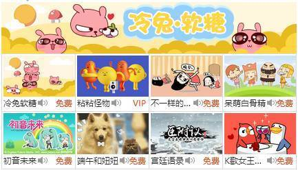
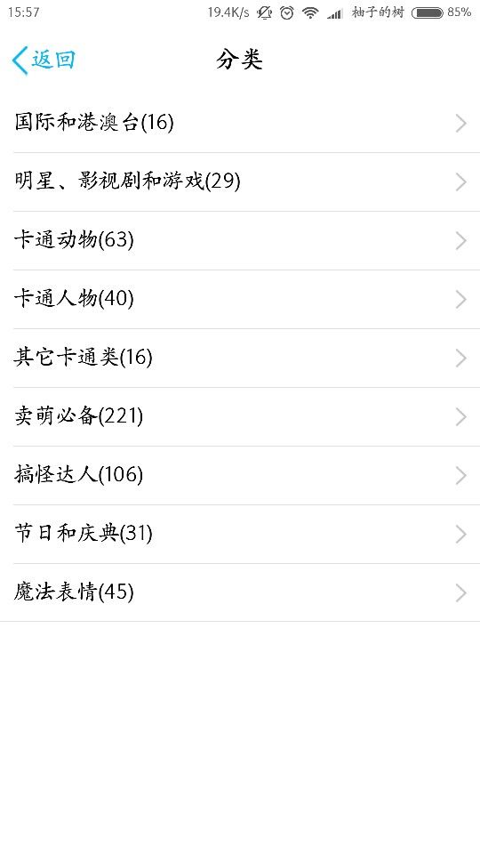
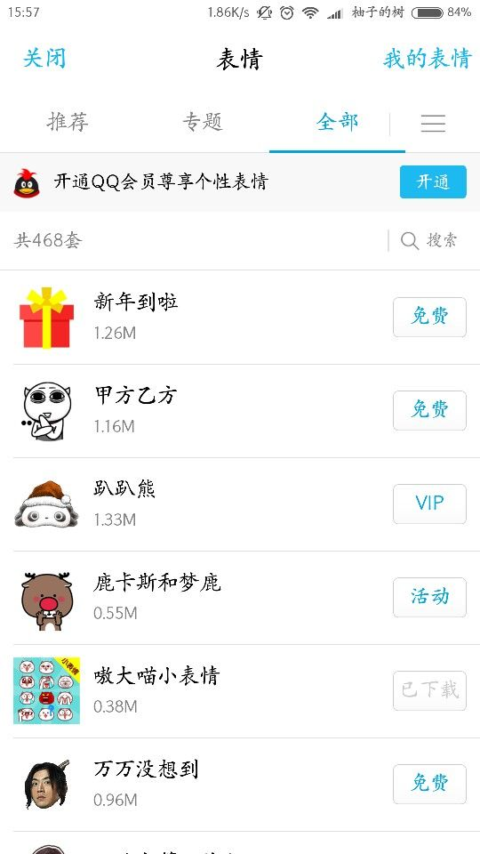
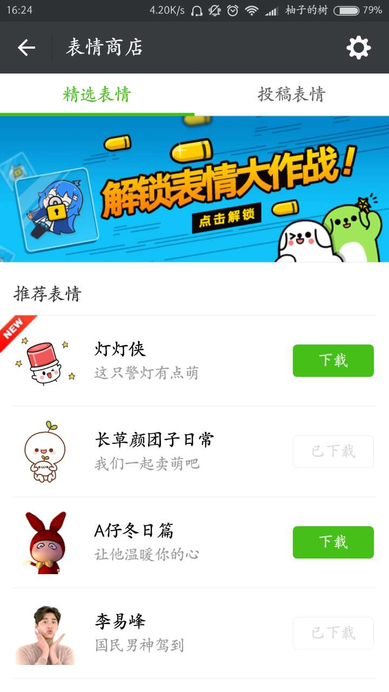
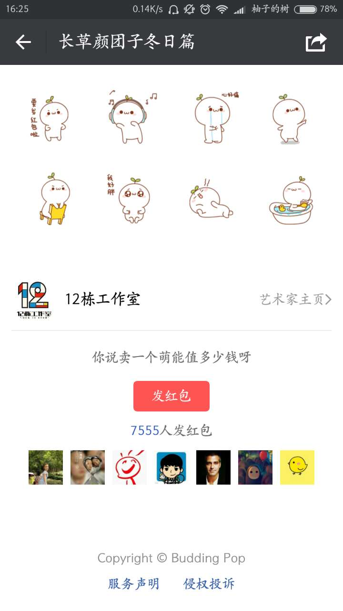

如今的表情发展，已经逐渐走上了商业化的道路，愿意花钱购买成套主题表情的用户也在逐渐增多，LINE，QQ，微信等国内外即时通讯工具在这方面都不甘示弱
Line
Line平台的表情付费服务，让更多的创造者能够直接的得到回报，而基于长尾效应，小众的商品销量累积与流行商品的收益持平或者超过，所以小额的表情的付费购买集结起来却成为一个巨大的消费力量，仅在2013年，贴图表情就让line在本财年收入3.38亿美金，平均每个月可以盈利1000万美元, 2014年单季度销量达到12.3亿日元，约合6300万人民币。

印度神的表情，相信只有喜欢这个文化的人才会专门购买，但是如果喜欢看DKDM众神之神和摩柯婆罗多的人，一定不想错过这套表情。这就是网络商品能够更满足小众需求的实际案例。 不喜欢的人不会去花时间，喜欢的人一定会舍得掏钱购买的，这就是Line的想法。
但是在表情包的发展历史中，腾讯具有里程碑的标志性作用，无论是表情的制作还是传播，都是以QQ和微信为平台，在少则三人，多则上千的qq群中以病毒性的姿态传播。这样的吸金能力，鹅厂当然在微信毫不脸红的直接照抄了这个模式。即使是以不大喜欢付费的中国市场，也逐步的接受了小额的内购增值，包括QQ表情在内的增值服务业务的收入2014年第四季达到171.37亿人民币
表情包的概念也随着eif，eip打包文件应运而生，一开始，流行的很多是可爱系的表情，直接来自论坛表情的导入，后来不少电影，搞笑视频，乃至11区动作片的gif也成为了流行的表情包。在QQ本身提供表情商场的基础上，自制或者微博的表情也交叉渗入日常聊天。
而现在，QQ的表情商城建设已经日趋完善，成套的表情分类丰富，内容囊括设计师作品，流行影视剧，明星等等。
 这些表情包最常用的和流行的一半都是免费，而更多的则是会员专属和收费使用。QQ表情是最早认识到中国特有的人口社会结构与长尾理论的商业化产品，通过QQ表情，腾讯QQ完成了用户收费市场的早期培育，培养了中国第一批互联网付费用户，可谓是“屌丝经济学”的完美范例。
微信
与QQ出于同一家的微信，既然同样是即时通讯类产品，对表情的使用自然也是不甘落后，与QQ不同的是，微信中的自定义表情最多只能保存150个，并且不能打包，这在一定程度上给微信的表情市场提供了更大的发展空间。
与QQ表情商城不同的是，微信只有很少一部分（明星拍摄的表情）需要付费，而其他的由设计师或工作室设计的表情，则以一种发红包的模式由用户自主决定是否为此付钱。

但总归来说，商城的表情包还是以一种系统化，有规律的态势发展，而在商城之外，靠着强大的PS和人们的想象力，通过表情包(eif)格式流通的，用户自造的表情们，又是另一个神奇的世界。